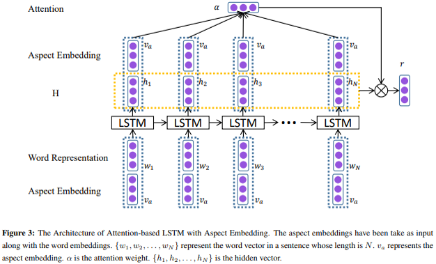

Incorporates attention mechanism in LSTM for sentiment classification in aspect level
Aspect-level sentiment: distinguishes the sentiment of the input sentence with respect to few pre-defined categories
e.g. "The appetizers are ok. but the service is slow"
Sentiment of the sentence in the aspect of "taste" : positive
Sentiment of the sentence in the aspect of "service" : negative

Architecture
Train LSTM with both word & aspect embedding vectors as inputs to capture interdependence of words and aspects simultaneously
Concatenate aspect embedding to the hidden representation vector generated from LSTM
Using the concatenated vectors from step 2 as input, additional softmax layer is trained as attention mechanism to generate weights for each of the hidden representation vector.
Hidden representation vectors are multiplied by their corresponding weights from step 3 to generate attention based hidden representation
Hidden representation of the entire sentence is computed by adding the hidden representation computed from LSTM and the hidden representation computed from the attention mechanism in step 4.
Final softmax layer trained for classifying aspect level sentiment
Essentially, bigger input space through incorporating aspect embedding inevitably increases the model's capacity to capture the useful clues for the classification.
Adding attention based hidden representation at the end of LSTM enables the model to emphasize / carry on the impact of the local words that could have been neglected while training LSTM.
Although this model successfully captures the dependency between the words and the aspects, each aspect is fed into the model separately, thereby failing to incorporate the interdependence between the aspects.